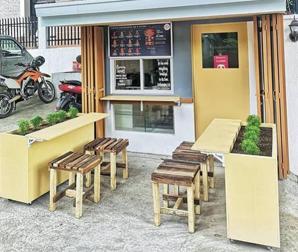
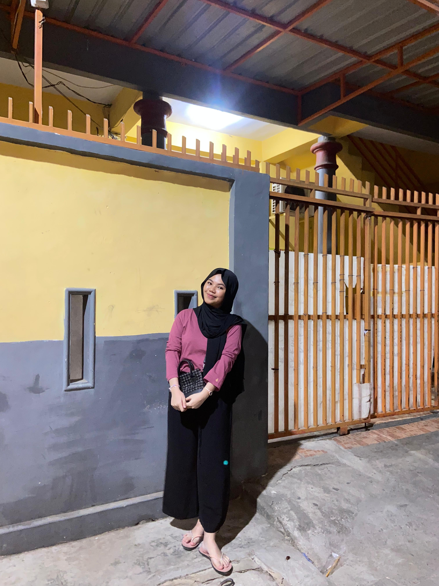
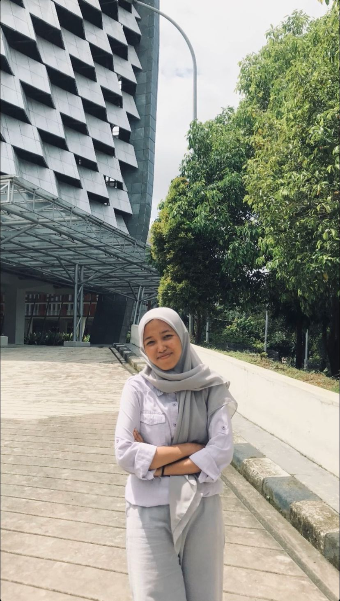

OurMenu



Selamat datang di kedai dapur Tengah, tempat di mana kelezatan makanan ringan bertemu dengan suasana hangat dan bersahabat. Kedai Dapur Tengah menawarkan pilihan camilan yang cocok untuk semua kalangan. dari jajanan manis yang menggugah selera, setiap produk kami dibuat dengan cinta dan perhatian terhadap detail. Terima kasih telah memilih kami sebagai tempat menikmati makanan ringan. Kami berharap dapat menyajikan kelezatan yang membuat Anda ingin kembali lagi!

